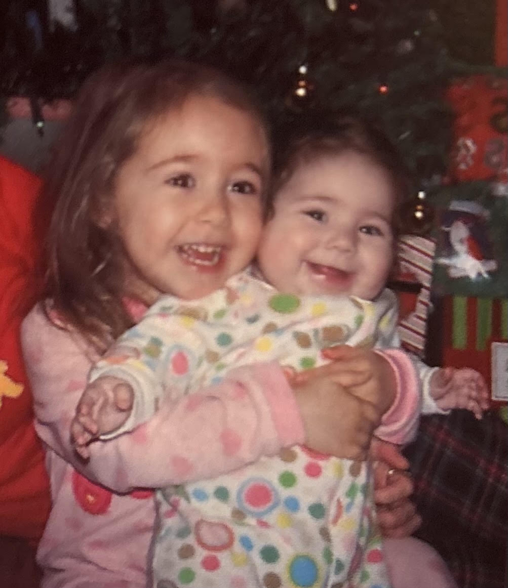
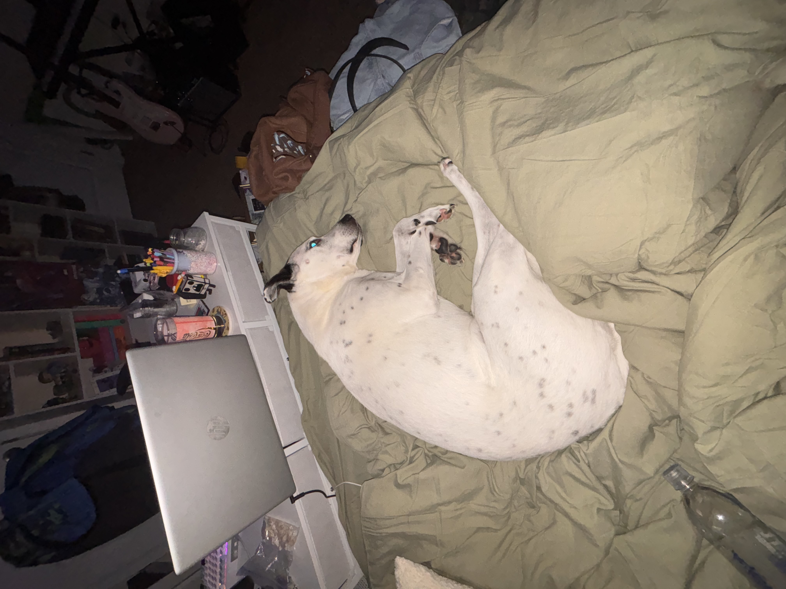

Welcome to My Personal Home Page!
Hi! I'm Christa, a fourth-year Computer Science student at UNC Charlotte with a concentration in Cybersecurity and a minor in Criminal Justice. I'm looking forward to finishing my undergraduate degree and continuing my education with a Master's degree!
This website is a little introduction to who I am, what I enjoy doing, and some of the things that are important to me. Feel free to look around!
A Little More About Me...
- I love going out and making memories with my friends.
- I have a Dalmatian/Pitbull mix named Jagger.
- I love taking pictures of pretty skies and sunsets.
- I'm interested in technology, cybersecurity, and criminal justice.
Some Pics!
Here are a few pictures of some of my favorite people, places, and things.


My Coursework
I'm currently working on projects for my ITIS 3135 Front-End Web Application Development course. You can check out my assignments and projects on my course website!